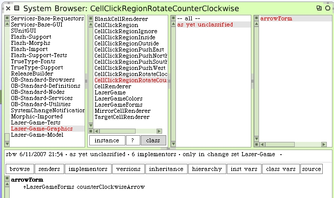

Proceed by writing a new unit test. We can begin with a new test for clicks in the outside region. It starts out pretty simple. Create a new sublcass of TestCase named CellClickOutsideRegionRotateTestCase.
Next, like we did for the push regions, we will need two regions for the rotation directions.

Each will answer their own arrow form.
